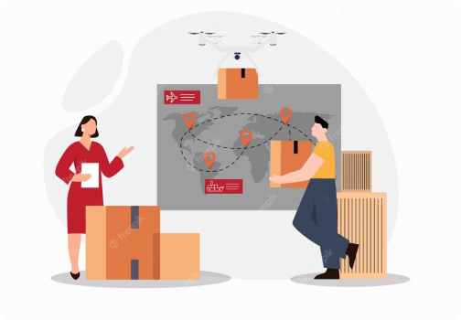
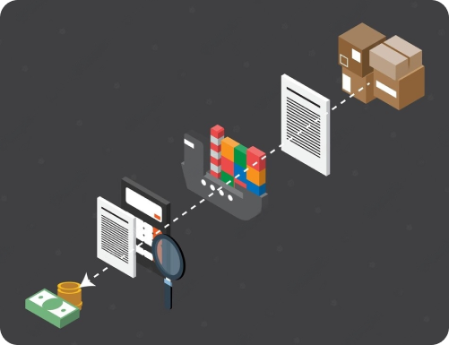
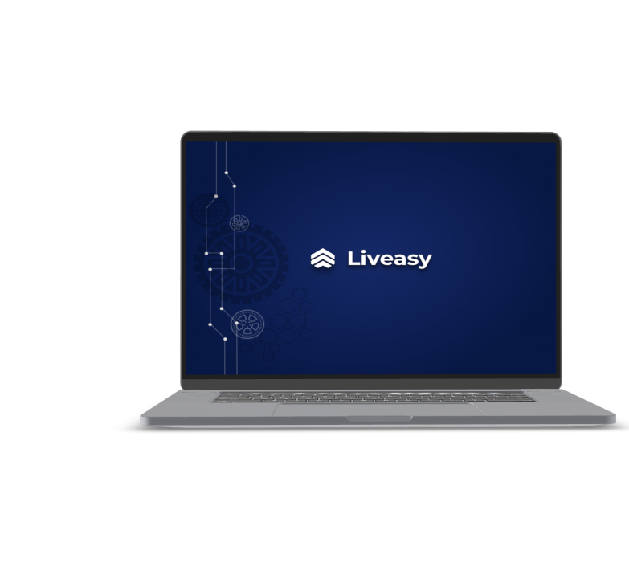

How Freight Sourcing and Reverse Auctions Cut Transportation Spending
INTRODUCTION
In the intricate dance of business operations, the rhythm of efficient transportation is paramount to keep supply chains moving seamlessly. However, the quest for cost-effective shipping solutions often becomes a puzzle. Enter the dynamic duo: freight sourcing and reverse auctions. These innovative strategies are poised to revolutionize the transportation game, offering businesses a chance to dramatically cut costs while upholding quality and reliability.
Cracking the Code of Freight Sourcing
Imagine hunting for the ultimate deal, but instead of products, you're seeking the best shipping solutions. That's freight sourcing in a nutshell. This involves evaluating a myriad of carriers, routes, and transportation modes to discover the optimal path for moving goods from point A to B without breaking the bank.

Unveiling the Power of Reverse Auctions

Reverse auctions are like taking freight sourcing to an electrifying online platform. Picture it as a bustling digital marketplace where carriers go head-to-head to win your business. Instead of you chasing carriers, they compete for your shipment by bidding down prices. It's a lively online bidding war where the ultimate victor is the lowest bidder, ensuring that you snag the most pocket-friendly shipping rate.
Thriving on Healthy Carrier Competition
The magic of reverse auctions lies in the spirit of friendly rivalry among carriers. With your business as the prize, carriers are driven to offer their most competitive rates to secure your nod. This not only slashes costs but motivates carriers to provide exceptional services to stand out in the crowd. In essence, your logistics game elevates without stretching your budget.

From Complexity to Simplicity: Streamlined Process, Enhanced Savings
Imagine hunting for the ultimate deal, but instead of products, you're seeking the best shipping solutions. That's freight sourcing in a nutshell. This involves evaluating a myriad of carriers, routes, and transportation modes to discover the optimal path for moving goods from point A to B without breaking the bank.
Embrace the Future of Logistics with Liveasy
And here's where Liveasy Logistics enters the scene, perfectly aligned with your quest for efficiency and cost savings. In the world where transportation costs were once a challenge, Liveasy steps in with innovative solutions that not only address the issues faced by businesses in the logistics sector but provide an all-encompassing remedy. From streamlining manual processes to eradicating inefficiencies, Liveasy embraces cutting-edge technology and algorithms to create a seamless freight management experience.

CONCLUSION
In the fast-paced realm of modern business, the hunt for ingenious cost-cutting methods is ceaseless. Enter freight sourcing and reverse auctions as the dynamic duo leading the charge. They empower businesses to secure optimal shipping rates through friendly competition among carriers, all the while keeping the supply chain flowing smoothly. And with Liveasy Logistics offering the perfect blend of innovation and transparency, the future of logistics is just a click away. So, don't just ship goods; navigate the seas of opportunity with the power of freight sourcing, reverse auctions, and Liveasy by your side. Your supply chain and bottom line will thank you.